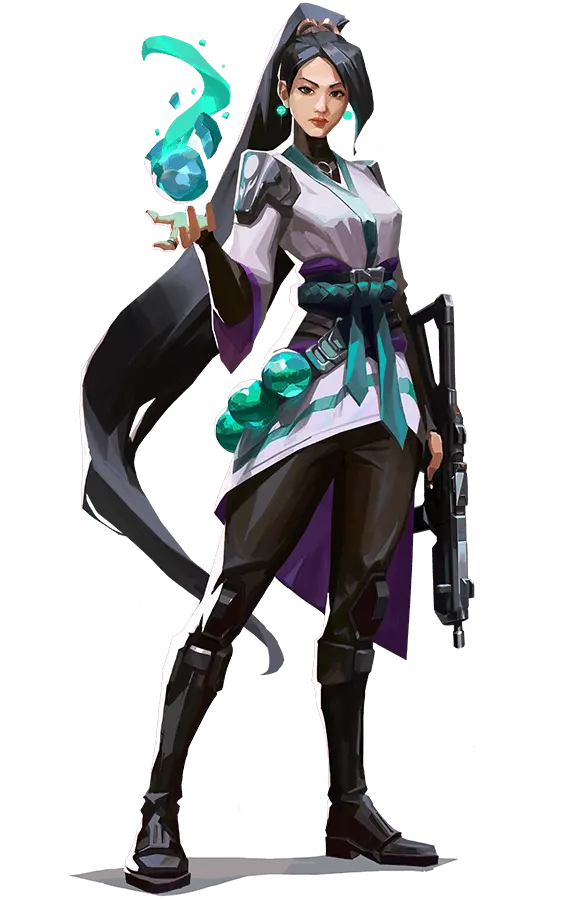

En esta sección podras obtener información sobre cada uno de los personajes para así poder comprobar las características que tienen cada uno de
ellos, además de que podras consultar sus habilidades y mucho más. Esta seccion te podra servir de guia tras completar nuestro formulario que te
indica que rol deberias jugar ya que en la información de los personajes podrás consultar el rol que tiene cada uno de ellos o los que pueden
adaptar ya que un personaje se puede jugar en mas roles de los indicados por el juego debido a sus habilidades o forma en la que se juega.
Puedes obtener mas información sobre los personajes clickando sobre su icono:
La agente Ghanesa Astra canaliza las energias del cosmos para remodelar los campos de batalla a su antojo. Con pleno dominio de su forma astral
y un talento para una profunda previsión estrategica, siempre está eones por delante del proximo movimiento de su enemigo
Q: PULSO ESTELAR
Coloca estrellas en Modo Astral (X) ACTIVA una estrella para detonar un Pulso Estelar. El Pulso Estelar carga brevemente y luego ataca, lo que aturde a todos los jugadores en el área.
E: NEBULOSA
Coloca estrellas en Modo Astral (X) ACTIVA una estrella para transformarla en una Nebulosa (humo). Usa (F) en una estrella para Disiparla, lo que devuelve la estrella para colocarla en una nueva ubicación después de un momento. Disipar forma una Nebulosa falsa brevemente en la ubicación de la estrella antes de regresar.
C: POZO GRAVITACIONAL
Coloca estrellas en Modo Astral (X) ACTIVA una estrella para formar un Pozo Gravitacional. Los jugadores en el área son atraídos hacia el centro antes de que estalle, lo que causa que todos los jugadores que aún siguen atrapados se vuelvan frágiles.
X: MODO ASTRAL/DIVISIÓN CÓSMICA
ACTIVA (X) para entrar en Modo Astral donde puedes colocar estrellas con tu DISPARO PRINCIPAL. Puedes reactivar las estrellas más tarde, lo que las transforma en un Pulso Estelar, Nebulosa o Pozo Gravitacional. Cuando División Cósmica esté cargada, usa el DISPARO SECUNDARIO en Modo Astral para comenzar a apuntar, luego el DISPARO PRINCIPAL para elegir dos ubicaciones. Una División Cósmica infinita conecta los dos puntos que selecciones. División Cósmica bloquea las balas y amortigua considerablemente el audio.
BREACH
ROLES: Iniciador
Breach, el sueco biónico, dispara una serie de explosiones cinéticas controladas para abrirse paso por el territorio enemigo.
Su capacidad para infligir daño y sembrar el caos garantiza que los combates siempre estén de su parte.
Q - EXPLOSIÓN CEGADORA
EQUIPA una carga explosiva cegadora. DISPARAD la carga para liberar una rápida explosión que atraviesa la pared. Cuando detona, la carga ciega a todos los jugadores que la estén mirando.
E - FALLA
EQUIPA una bomba sísmica. MANTENED PULSADO DISPARAR para aumentar la distancia. SOLTAD para liberar un seísmo que aturdirá a todos los jugadores dentro de la zona y en una línea hasta ella.
EQUIPA una carga explosiva de fusión. DISPARAD la carga para liberar una explosión que atraviesa la pared tras un retardo. La explosión inflige mucho daño a cualquiera que esté dentro del área afectada.
X - FRAGOR IMPARABLE
EQUIPA una carga explosiva sísmica. DISPARAD para liberar un seísmo que se extenderá por una gran zona en forma de cono. El seísmo aturde y lanza por los aires a todos los jugadores que estén en el interior de la zona.
BRIMSTONE
ROLES: Controlador
De origen estadounidense, Brimstone cuenta con un arsenal de órbita que garantiza que su equipo siempre vaya por delante. Su capacidad para proporcionar herramientas de utilidad con precisión y desde la distancia lo convierten en un comandante ejemplar.
Q - INCENDIARIO
EQUIPA un lanzagranadas incendiarias. DISPARAD una granada que detona cuando se detiene en el suelo, lo que genera una zona de fuego persistente que daña a los jugadores que estén en su interior.
E - CORTINA DE HUMO
EQUIPA un mapa táctico. DISPARAD para fijar ubicaciones en las que aparecerán nubes de humo de Brimstone. ALTERNAD EL MODO DE DISPARO para confirmar. Esto liberará nubes de humo de larga duración que bloquearán la visión en la zona seleccionada.
C - BALIZA ESTIMULANTE
EQUIPA una baliza estimulante. DISPARAD para lanzar la baliza estimulante frente a Brimstone. Al aterrizar, la baliza estimulante creará un campo que otorgará Disparo rápido a los jugadores.
X - GOLPE ORBITAL
EQUIPA un mapa táctico. DISPARAD para lanzar un golpe orbital en la ubicación objetivo con un láser persistente, que provocará un gran daño prolongado a los jugadores que se encuentren en la zona seleccionada.
CHAMBER
ROLES: Centinela, Duelista
Chamber, el diseñador de armas francés, siempre bien vestido y bien pertrechado y expulsa a los agresores con precisión letal. Aprovecha su arsenal personalizado para repeler, eliminar enemigos a distancia y crear la contingencia perfecta para cada plan.
Q - CAZADOR DE CABEZAS
ACTÍVALA para equipar una pistola pesada. Utiliza el botón de modo de DISPARO ALTERNATIVO para apuntar con la mira.
E - RENDEZ-VOUS
COLOCA un anclaje de teleportación. Mientras esté en el suelo y al alcance, REACTIVA la habilidad para teleportarte rápidamente al anclaje. El anclaje se puede recoger para VOLVER A COLOCARLO.
C - MARCA REGISTRADA
COLOCA una trampa que escanea en busca de enemigos. Cuando un enemigo visible entra en el alcance, la trampa inicia una cuenta atrás y, a continuación, desestabiliza el terreno a su alrededor, lo que crea un campo persistente que ralentiza a los jugadores que se encuentren en su interior. La trampa se puede recoger para VOLVER A COLOCARLA.
X - TOUR DE FORCE
ACTÍVALA para sacar un poderoso rifle de francotirador personalizado que mata a los enemigos con cualquier impacto directo. Matar a un enemigo genera un campo persistente que ralentiza a los jugadores que se encuentren en su interior.
CYPHER
ROLES: Centinela
Cypher es un experto en información de Marruecos que se especializa en redes de vigilancia y es capaz de seguirle la pista al enemigo constantemente. No hay secreto a salvo ni maniobra que pase desapercibida. Cypher siempre está alerta.
Q - PRISIÓN CIBERNÉTICA
Lanza INSTANTÁNEAMENTE una prisión cibernética frente a Cypher. ACTIVADLA para crear una zona que bloquea la visión de los enemigos que la atraviesan.
E - CÁMARA ESPÍA
EQUIPA una cámara espía. DISPARAD para desplegar la cámara en la ubicación objetivo. VOLVED A USAR la habilidad para controlar la vista de la cámara. Cuando tengáis control de la cámara, DISPARAD para lanzar un dardo marcador que revelará la ubicación de cualquier jugador alcanzado.
C - CABLE TRAMPA
COLOCA una trampa que escanea en busca de enemigos. Cuando un enemigo visible entra en el alcance, la trampa inicia una cuenta atrás y, a continuación, desestabiliza el terreno a su alrededor, lo que crea un campo persistente que ralentiza a los jugadores que se encuentren en su interior. La trampa se puede recoger para VOLVER A COLOCARLA.
X - HURTO NEURONAL
Usadla INSTANTANEAMENTE sobre un enemigo muerto en vuestra mira para revelar la posición de todos los jugadores enemigos vivos.
FADE
ROLES: Iniciador
Fade, la cazarrecompensas turca, controla el poder de las pesadillas para poner al descubierto los secretos de los enemigos. Armada con el terror mismo, da caza a sus objetivos y revela sus miedos más profundos, para después acabar con ellos en la oscuridad.
Q - APRESAR
Equipa un orbe hecho con tinta de pesadilla. DISPARA para lanzar el orbe que, tras un determinado periodo de tiempo, caerá en picado hacia el suelo. Al llegar al suelo, la tinta explotará y se creará una zona de la que los enemigos no podrán escapar por las vías habituales. VUELVE A ACTIVAR la habilidad para que el proyectil caiga antes en un punto de su trayectoria.
E - TORMENTO
Equipa una pesadilla. DISPARA para lanzar el orbe que, tras un determinado periodo de tiempo, caerá en picado hacia el suelo. Al llegar al suelo, el orbe se convertirá en una pesadilla que revelará la ubicación de los enemigos que se encuentren en su línea de visión. Los enemigos pueden destruir la pesadilla. VUELVE A ACTIVAR la habilidad para que el proyectil caiga antes en un punto de su trayectoria.
C - ACECHADOR
EQUIPA un Acechador. DISPARA para enviar al Acechador, que se desplazará en línea recta. El Acechador se adherirá a los enemigos o rastros situados en su cono de visión frontal y los perseguirá. Si los alcanza, reducirá sus campos de visión. MANTÉN PULSADO el botón de DISPARAR para dirigir al Acechador en la dirección de la mira.
X - OCASO
EQUIPA el poder del miedo. DISPARA para emitir una oleada de energía terrorífica capaz de atravesar paredes. Esta energía deja un rastro hasta el oponente y, además, lo ensordece y aplica declive.
HARBOR
ROLES: Controlador
Desde las costas de la India, Harbor llega al campo de batalla armado con tecnología ancestral capaz de controlar el agua. Libera espumosos torrentes y demoledoras olas para escudar a sus aliados y machacar a quien se interponga en su camino
Q - CALA
EQUIPA una esfera de agua protectora. DISPARA para lanzarla. ALTERNA EL MODO DE DISPARO para lanzarla por debajo del hombro. Al impactar contra el suelo, genera un escudo de agua destructible que bloquea las balas.
E - MAREA ALTA
EQUIPA una pared de agua. DISPARA para lanzarla hacia adelante por el suelo. MANTÉN PULSADO para guiar el agua en la dirección de la mira, atravesando los obstáculos del terreno y creando una pared por todo el recorrido. ALTERNA EL MODO DE DISPARO mientras trazas la pared para acabarla antes de tiempo. Los jugadores golpeados se ven ralentizados.
C - CASCADA
EQUIPA una ola de agua. DISPARA para enviarla hacia delante y hacer que atraviese las paredes. ÚSALA DE NUEVO para detener la ola. Los jugadores golpeados se ven ralentizados.
X - AJUSTE DE CUENTAS
EQUIPA todo el poder de tu artefacto. DISPARA para invocar un géiser que nace del suelo. Los enemigos de la zona serán objetivo de varios ataques del géiser. Los jugadores que se vean atrapados por un impacto quedan aturdidos.
JETT
ROLES: Duelista
Jett viene de Corea del Sur, y su estilo de lucha ágil y evasivo le permite asumir grandes riesgos. Corre y salta de aquí para allá en las refriegas y hace trizas a los enemigos con una rapidez espectacular.
Q - VENDAVAL
Propulsa INSTANTÁNEAMENTE a Jett a mucha altura hacia arriba.
E - VIENTO DE COLA
ACTIVA para preparar una ráfaga de viento durante un tiempo limitado. VUELVE A USAR el viento para propulsar a Jett en la dirección en la que se esté moviendo. Si Jett está quieta, se propulsa hacia delante.
C - BORRASCA
Lanza un proyectil INSTANTÁNEAMENTE que se expande para crear una nube que bloquea la visión brevemente al impactar contra una superficie. MANTENED PULSADO el botón de la habilidad para que el humo se curve en la dirección de la mira.
X - TORMENTA DE CUCHILLAS
EQUIPA un conjunto de cuchillos de alta precisión que se recargan cuando acaban con un oponente. DISPARAD para lanzar un único cuchillo a vuestro objetivo. ALTERNAD EL MODO DE DISPARO para lanzar todos los cuchillos que os queden a vuestro objetivo.
SAGE

ROLES: Centinela, Duelista
Originaria de China, Sage destaca a la hora de crear espacios seguros para su equipo allá donde va. Sus capacidades especiales para revivir a compañeros caídos en batalla y para mantener a raya los asaltos enemigos la convierten en la calma en mitad de la tormenta para su equipo.
Q - ORBE DE RALENTIZACIÓN
EQUIPA un orbe de ralentización. DISPARAD para lanzar hacia adelante un orbe de ralentización que explota al aterrizar, lo que genera un campo persistente que ralentiza a los jugadores que se encuentren en su interior.
E - ORBE DE SANACIÓN
EQUIPA un orbe de sanación. DISPARAD con la mira sobre un aliado herido para curarlo durante un breve periodo. ALTERNAD EL MODO DE DISPARO si Sage ha recibido daño para que se cure a sí misma durante un breve periodo.
C - ORBE BARRERA
EQUIPA un orbe barrera. DISPARAD para colocar una pared sólida. Alternad el MODO DE DISPARO para rotarla antes de crearla.
X - RESURECCION
EQUIPA una habilidad de resurrección. DISPARAD con la mira sobre un aliado muerto para empezar a resucitarlo. Tras un breve periodo de canalización, el aliado resucitará con toda la vida.
SOVA
ROLES: Iniciador
Nacido en el eterno invierno de la tundra rusa, Sova destaca a la hora de localizar, perseguir y eliminar a los enemigos con una eficiencia y una precisión inclementes. Su arco personalizado junto con su sobrenatural capacidad de rastreamiento hacen que sea imposible escapar.
Q - FLECHA EXPLOSIVA
EQUIPA un arco con una flecha explosiva. DISPARAD para lanzar la flecha explosiva hacia delante. Explotará cuando impacte e infligirá daño a los enemigos cercanos. MANTENED PULSADO para ampliar su alcance. ALTERNAD EL MODO DE DISPARO para añadir hasta dos rebotes a la flecha.
E - PROYECTIL DE RECONOCIMIENTO
EQUIPA un arco con un proyectil de reconocimiento. DISPARAD para enviar el proyectil hacia delante. Se activará cuando impacte y revelará la posición de los enemigos que se encuentren en la línea de visión del proyectil. MANTENED PULSADO para ampliar su alcance. ALTERNAD EL MODO DE DISPARO para añadir hasta dos rebotes a la flecha.
C - DRON DE RECONOCIMIENTO
EQUIPA un dron de reconocimiento. DISPARAD para desplegar el dron y controlar su movimiento. Cuando tengáis control del dron, DISPARAD para lanzar un dardo marcador que revelará la ubicación de cualquier jugador alcanzado.
X - FURIA DEL CAZADOR
EQUIPA un arco con tres proyectiles de energía de largo alcance que atraviesan paredes. DISPARAD para lanzar un proyectil de energía en línea recta frente a Sova que infligirá daño y revelará la posición de los enemigos que se encuentren a su paso. Esta habilidad puede VOLVERSE A USAR hasta dos veces más mientras el temporizador de la habilidad esté activo.
KAY/O
ROLES: Iniciador, Duelista
KAY/O es una máquina de guerra creada con un solo propósito: neutralizar radiantes. Su poder para suprimir las habilidades enemigas neutraliza la capacidad de sus rivales para contraatacar, un aspecto que le da a él y a sus aliados la ventaja definitiva en la batalla.
Q - UNIDAD / FLASH
EQUIPA una granada cegadora. DISPARA para lanzarla. La granada cegadora explota después de un breve periodo de tiempo y ciega a todos en la línea de visión.
E - PUNTO / CERO
EQUIPA una cuchilla de supresión. DISPARA para lanzarla. La cuchilla se pega contra la primera superficie que toca, luego explota y suprime a cualquier oponente que se encuentre en el radio de la explosión.
C - FRAG / MENTO
EQUIPA un fragmento explosivo. DISPARA para lanzarlo. El fragmento se pega al suelo y explota varias veces, lo que inflige daño casi mortal en el centro con cada explosión.
X - CMD / ANULAR
Se sobrecarga AL INSTANTE con energía de radianita polarizada que le da poder a KAY/O y causa que grandes pulsos de energía emanen desde su ubicación. Los enemigos impactados por dichos pulsos quedan suprimidos durante un breve momento.
KILLJOY
ROLES: Centinela
Killjoy es una brillante agente alemana que se encarga de tomar el campo de batalla con un amplio arsenal de inventos. Si el daño de sus invenciones no detiene a los enemigos, la debilitación de sus robots los convertirá en presas fáciles.
Q - BOT DE ALARMA
EQUIPA un bot de alarma camuflado. DISPARA para desplegar un bot que dará caza a los enemigos que estén dentro del alcance. Tras alcanzar su objetivo, el bot explota y aplica vulnerabilidad. MANTÉN PULSADO EQUIPAR para recoger un bot desplegado.
E - TORRETA
EQUIPA una torreta. DISPARA para desplegar una torreta que dispara a los enemigos en un cono de 180 grados. MANTÉN PULSADO EQUIPAR para recoger la torreta desplegada.
C - NANOENJAMBRE
EQUIPA una granada de nanoenjambre. DISPARA para lanzar la granada. Cuando aterriza, la granada enjambre se camufla. ACTIVA el nanoenjambre para desplegar un enjambre de nanobots.
X - BLOQUEO
EQUIPA el dispositivo de bloqueo. DISPARA para desplegar el dispositivo. Tras un largo periodo de carga, el dispositivo detiene a todos los enemigos que estén dentro del radio de efecto. Los enemigos pueden destruir el dispositivo.
NEON
ROLES: Duelista
Neon, una agente filipina, se lanza hacia la batalla a una velocidad trepidante, disparando descargas bioeléctricas tan rápido como las genera su cuerpo. Se adelanta para pillar a sus enemigos desprevenidos y acaba con ellos más rápido que una bala.
Q - EXPLOSIÓN DE RELÉ
Lanza INSTANTÁNEAMENTE un rayo de energía que rebota una vez. Al golpear cada superficie, el rayo electrifica el suelo bajo ella con una explosión aturdidora.
E - A TODA MÁQUINA
Canaliza INSTANTÁNEAMENTE el poder de Neon para aumentar su velocidad. Cuando esté cargada, utilizad el DISPARO ALTERNATIVO para activar un deslizador eléctrico. La carga del deslizador se reinicia con cada dos asesinatos.
C - CARRIL RÁPIDO
DISPARA dos líneas de energía hacia delante por el suelo. Dichas líneas se desplazan una corta distancia o hasta chocar contra algún obstáculo. Entonces, las líneas se alzan para convertirse en muros de energía estática que bloquean la visión e infligen daño a los enemigos que los atraviesan.
X - SOBRECARGA
Neon desata todo su poder y velocidad durante un breve periodo de tiempo. DISPARAD para canalizar su poder en un mortífero rayo móvil y preciso. Su duración se reinicia con cada asesinato.
OMEN
ROLES: Controlador, Duelista
Omen es un fantasma de tiempos pasados que acecha en las sombras. Es capaz de cegar al enemigo, teleportarse a través del campo de batalla y sembrar el caos y la paranoia mientras sus rivales se preguntan dónde atacará la próxima vez.
Q - PARANOIA
Dispara INSTANTÁNEAMENTE un proyectil sombrío hacia delante que reduce brevemente el alcance de la visión de todos los jugadores que toca. El proyectil puede atravesar paredes.
E - VELO TENEBROSO
EQUIPA un orbe sombrío y muestra su indicador de alcance. DISPARAD para lanzar el orbe sombrío a la ubicación señalada, lo que genera una esfera sombría de larga duración que bloquea la visión. MANTENED PULSADO EL MODO DE DISPARO ALTERNATIVO al apuntar para que el marcador se aleje más. MANTENED PULSADA la tecla de la habilidad para que el marcado se acerque más.
C - APARICIÓN TENEBROSA
EQUIPA una habilidad para caminar entre las sombras y muestra su indicador de alcance. DISPARAD para iniciar un breve periodo de canalización y después teleportaros a la ubicación señalada.
X - DESDE LAS SOMBRAS
EQUIPA un mapa táctico. DISPARAD para empezar a teleportaros a la ubicación seleccionada. Mientras se teleporta, Omen aparecerá como una sombra que los enemigos pueden destruir para cancelar su teleportación.
PHOENIX
ROLES: Duelista
Phoenix proviene del Reino Unido y sus poderes estelares salen a relucir con su estilo de combate, que prende fuego al campo de batalla de forma deslumbrante. No le hacen falta refuerzos; es él quién se lanza al combate y marca el ritmo.
Q - BOLA CURVA
EQUIPA un orbe fulgurante que dibuja una trayectoria curva y explota poco después de haberlo lanzado. DISPARAD para lanzar el orbe fulgurante hacia la izquierda, lo que hará que detone y ciegue a cualquier jugador que lo vea. ALTERNAD EL MODO DE DISPARO para lanzar el orbe fulgurante hacia la derecha.
E - COMBUSTIÓN
EQUIPA una bola de fuego. DISPARAD para lanzar una bola de fuego que explota transcurrido un tiempo determinado o al impactar contra el suelo, lo que crea una zona de fuego persistente que inflige daño a los enemigos.
C - LLAMARADA
EQUIPA una pared de llamas. DISPARAD para crear una línea de llamas que avanza hacia adelante, lo que forma una pared de fuego que bloquea la visión e inflige daño a los jugadores enemigos que la atraviesen. MANTENED PULSADO DISPARAR para curvar la pared en la dirección de la mira.
X - CENIZAS
Coloca INSTANTANEAMENTE un marcador en la ubicación de Phoenix. Mientras esta habilidad esté activa, morir o dejar que se agote el temporizador hará que se termine la habilidad y devolverá a Phoenix a esta ubicación con toda la vida.
RAZE
ROLES: Duelista
Raze llega desde Brasil con ganas de hacer que todo salte por los aires. Gracias a su estilo de juego basado en la fuerza bruta, destaca a la hora de barrer a grupos de enemigos atrincherados y de despejar áreas estrechas con explosión y sin compasión.
Q - FARDO EXPLOSIVO
Lanza AL INSTANTE un fardo explosivo que se adhiere a las superficies. VOLVED A USAR la habilidad después de que el fardo se adhiera para detonarlo y que dañe y desplace a todo aquello que alcance. Esta habilidad no inflige daño a Raze, pero sí que recibirá daño por caída si salta lo suficientemente alto.
E - BALAS DE PINTURA
EQUIPA una granada de racimo. DISPARAD para lanzar la granada, lo que causa daño y crea submuniciones que infligen daño a cualquiera que esté dentro del rango.
C - BOT EXPLOSIVO
EQUIPA un bot explosivo. DISPARAD para desplegar el bot y hacer que se desplace en línea recta por el terreno, rebotando por las paredes. El bot explosivo se fijará a los enemigos que encuentre en un cono frontal y los perseguirá. Si los alcanza, explotará e infligirá una gran cantidad de daño.
X - CIERRATELONES
EQUIPA un lanzacohetes. DISPARAD para lanzar un cohete que inflige un daño en área masivo al entrar en contacto con cualquier cosa.
REYNA
ROLES: Duelista
Desde el corazón de México, Reyna llega para dominar los combates uno contra uno y cada asesinato que consigue la hace más fuerte. Su potencial es prácticamente infinito, y la destreza individual es el único factor determinante de su éxito.
Q - DEVORAR
Los enemigos asesinados por Reyna dejan tras de sí orbes de alma que duran 3 segundos. Consume INSTANTÁNEAMENTE un orbe de alma cercano y se cura durante un breve periodo. Si se obtienen más de 100 puntos de vida con esta habilidad, la cantidad adicional se irá perdiendo con el tiempo. Si EMPERATRIZ está activa, esta habilidad se lanzará de forma automática y no consumirá el orbe.
E - DESPRECIAR
Consume INSTANTÁNEAMENTE un orbe de alma cercano y se vuelve intangible durante un breve periodo. Si EMPERATRIZ está activa, se vuelve invisible también.
C - MIRADA LASCIVA
EQUIPA un ojo etéreo e indestructible. ACTIVADLA para lanzar el ojo hacia delante una corta distancia. El ojo limitará la visión de todos los enemigos que lo miren.
X - EMPERATRIZ
Entra en un frenesí INSTANTÁNEO que aumenta drásticamente la velocidad de disparo, de equipamiento y de recarga. Conseguir un asesinato reinicia la duración.
SKYE
ROLES: Iniciador, Duelista
Skye y su manada de bestias se abren paso desde Australia y a través de territorio hostil. Sus creaciones obstaculizan los avances enemigos y su capacidad para curar a los demás se ocupa de que, a su lado, su equipo esté a salvo.
Q - PRECURSOR
EQUIPA un amuleto de lobo marsupial. DISPARA para desplegar al depredador y controlarlo. Mientras se está controlando al lobo, DISPARAR hace que salte hacia delante y explote, lo que aturde e inflige daño a los enemigos que golpee.
E - LUZ GUIA
EQUIPA un amuleto de halcón. DISPARA para lanzarlo hacia adelante. MANTENER PULSADO DISPARAR guía al halcón en la dirección de la mira. VOLVER A ACTIVAR la habilidad cuando el halcón está en el aire lo transforma en un destello cegador que emite un sonido de confirmación de impacto si ha cegado a un enemigo.
C - REFORESTACIÓN
EQUIPA un amuleto de curación. MANTENER PULSADO canaliza la habilidad, que cura a los aliados que estén dentro del alcance y del campo de visión. Se puede volver a utilizar hasta que se quede sin curación disponible. Skye no se puede curar a sí misma.
X - BUSCADORES
EQUIPA un amuleto de buscador. DISPARA para desplegar tres buscadores que localizan a los tres enemigos más cercanos. Si un buscador alcanza a su objetivo, limita su visión.
VIPER
ROLES: Controlador, Centinela
Viper es una química estadounidense con un amplio arsenal de dispositivos venenosos que le sirven para tomar el control del campo de batalla y cegar a los enemigos. Si las toxinas no acaban con su presa, la paranoia la rematará.
Q - NUBE VENENOSA
EQUIPA una granada de gas. DISPARAD para lanzar la granada, que permanecerá toda la ronda. VOLVED A USAR la habilidad para generar una nube de gas tóxico a cambio de combustible. La granada se puede VOLVER A USAR más de una vez y se puede recoger para VOLVER A COLOCARLA.
E - PANTALLA TÓXICA
EQUIPA un lanzagranadas de gas. DISPARAD para desplegar una larga hilera de granadas de gas que se pueden reactivar para crear un alto muro de gas tóxico a cambio de combustible. Se puede VOLVER A USAR más de una vez.
C - VENENO DE SERPIENTE
EQUIPA un lanzador químico. DISPARAD para lanzar un cartucho que se rompe al impactar contra el suelo, lo que genera una zona química persistente que daña a los enemigos.
X - POZO DE LA VIBORA
EQUIPA un pulverizador químico. DISPARAD para pulverizar una nube química en todas direcciones alrededor de Viper, lo que genera una gran nube que reduce el alcance de la visión y la vida máxima de los jugadores que se encuentren dentro de ella.
YORU
ROLES: Duelista, Iniciador
Yoru, nacido en Japón, abre agujeros en el tejido de la realidad para infiltrarse tras las líneas enemigas sin ser visto. Utiliza el engaño y la agresividad por igual para acabar con sus objetivos antes de que sepan qué ha pasado.
Q - PUNTO CIEGO
EQUIPA para arrancar un fragmento dimensional inestable de la realidad. DISPARA para lanzar el fragmento, lo que activa un destello que se carga al impactar contra una superficie sólida.
E - INFILTRACIÓN
EQUIPA un vínculo de grietas. DISPARA para lanzarlo hacia delante. ALTERNA el modo de disparo para colocarlo en el sitio. ACTIVA para teleportarte a la ubicación del vínculo. USA para activar un teleportar falso.
C - ENGAÑO
EQUIPA un eco que se transforma en una imagen idéntica de Yoru al activarse. DISPARA para activar la imagen al instante y enviarla hacia delante. ALTERNA el modo de disparo para colocar un eco inactivo. USA para transformar un eco inactivo en una imagen y enviarla hacia delante. Las imágenes explotan con un destello al ser destruidas por enemigos.
X - VIAJE INTERDIMENSIONAL
EQUIPA una máscara que te permite ver entre dimensiones. DISPARA para adentrarte en la dimensión de Yoru. Los enemigos que estén fuera no podrán verte ni hacerte daño.